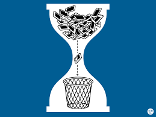
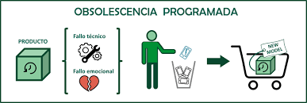
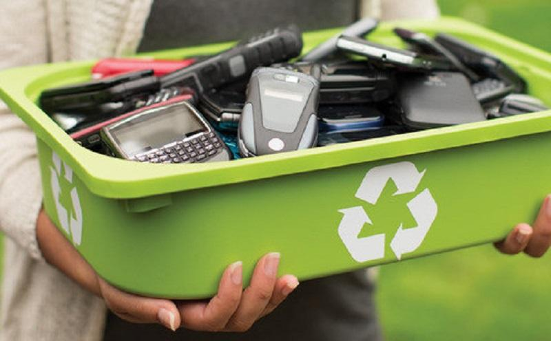

Definición
La obsolescencia programada es la estrategia de diseñar un producto para que tenga una vida útil limitada de forma intencional, de modo que, tras un tiempo calculado, se vuelva obsoleto, deje de funcionar bien o no compense repararlo.
1. Lógica económica
Se apoya en un modelo de “usar y tirar”: producir mucho, vender rápido y no priorizar la durabilidad ni la reparabilidad.

2. Tipos de obsolescencia programada
2.1. Obsolescencia técnica o funcional
Ocurre cuando el producto deja de funcionar correctamente por diseño, aunque podría haber durado más si se hubieran usado mejores materiales.
2.2. Obsolescencia por incompatibilidad (software)
El hardware sigue funcionando, pero el software deja de recibir soporte o actualizaciones.
2.3. Obsolescencia psicológica o estética
El producto funciona, pero se percibe como “viejo” por cambios frecuentes de diseño.
2.4. Obsolescencia por falta de reparación
La reparación es muy cara o no hay repuestos, de forma que se opta por comprar uno nuevo.

3. Impacto ambiental y social
- Genera más residuos electrónicos.
- Aumenta el consumo de recursos naturales.
- Incrementa las emisiones de gases de efecto invernadero.

4. Obsolescencia natural vs programada
La diferencia clave está en la intencionalidad: el producto podría durar más, pero se diseña para que no lo sea.
5. Alternativas y soluciones
- Leyes de "derecho a reparar".
- Diseño ecológico y productos modulares.
- Consumo responsable.